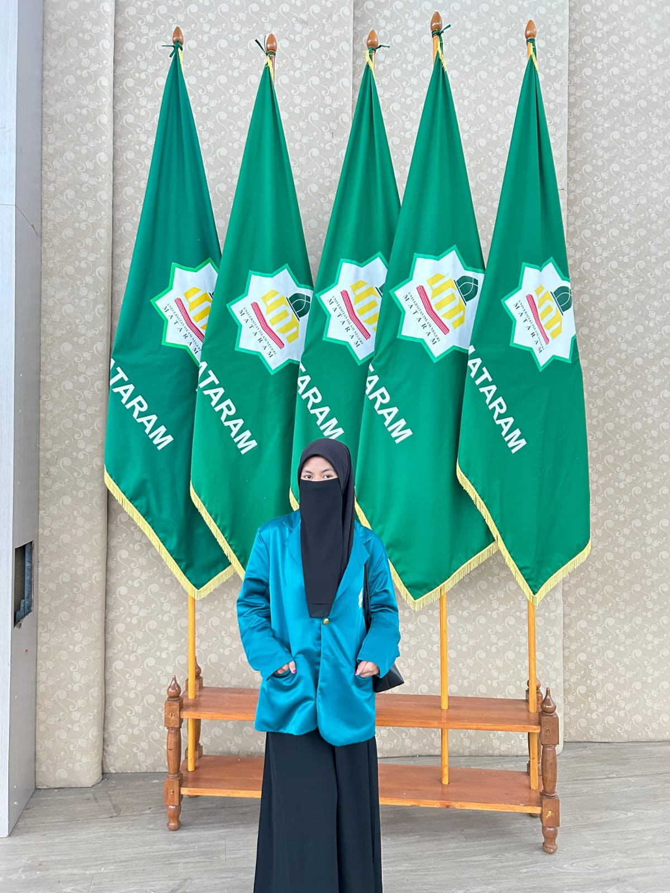

Panitia Festival Budaya
HMPS Kewirausahaan
Mahasiswa Program Studi Kewirausahaan, Fakultas Ekonomi dan Bisnis Islam, UIN Mataram. Dari Senaru, Lombok Utara, suka membuat sesuatu dengan tangan sendiri.

Saya Zee dari Dusun Pawang Karya, Desa Senaru, Lombok Utara. Saat ini saya kuliah di Program Studi Kewirausahaan, Fakultas Ekonomi dan Bisnis Islam (FEBI) UIN Mataram.
Saya suka DIY, memasak, mempayet baju, dan membuat kerajinan handmade. Dari hobi itu saya belajar bahwa ide kecil bisa tumbuh jadi usaha kalau dikerjakan dengan sabar dan konsisten.
Di kampus saya aktif sebagai anggota HMPS Kewirausahaan di Divisi HAM dan Advokasi, dan ikut jadi panitia di beberapa kegiatan. Saya senang belajar langsung dari lapangan.
Madrasah Ibtidaiyah
Madrasah Tsanawiyah, sambil mondok di Pondok Pesantren Lombok Tahfidz Center Zam-zam
Sekolah menengah atas, sambil mondok di Pondok Pesantren Lombok Tahfidz Center Zam-zam
Program Studi Kewirausahaan, Fakultas Ekonomi dan Bisnis Islam (FEBI). Sedang berjalan.
Membuat gelang, gantungan kunci, dan aksesoris dari manik-manik.
Merancang bentuk, warna, dan model sendiri, atau menyesuaikannya dengan keinginan orang lain.
Menghias baju dengan payet supaya tampil lebih cantik.
Sering membuat makanan dan minuman viral TikTok, lalu membagikannya.
HMPS Kewirausahaan
UIN Mataram
Berjualan di berbagai acara festival
Auditorium (Audit) UIN Mataram
Berjualan langsung kepada mahasiswa UIN Mataram
Belajar bisnis di kelas, lalu mencobanya dengan tangan sendiri.